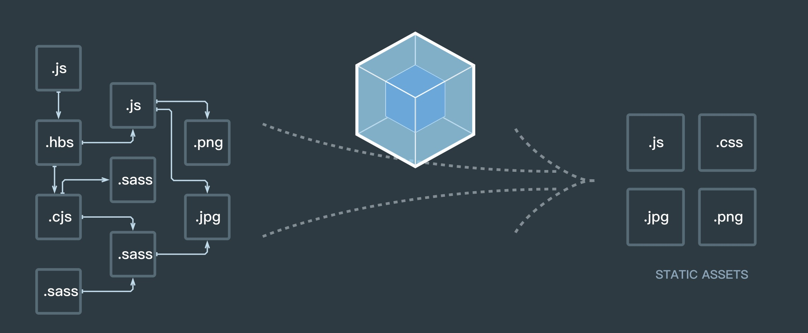
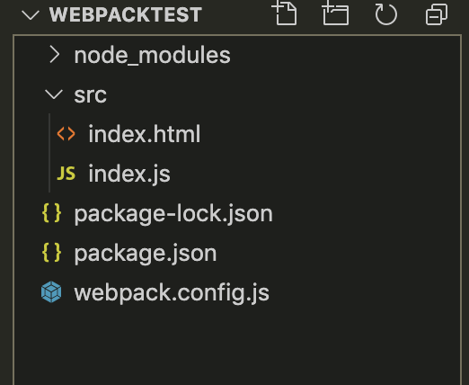
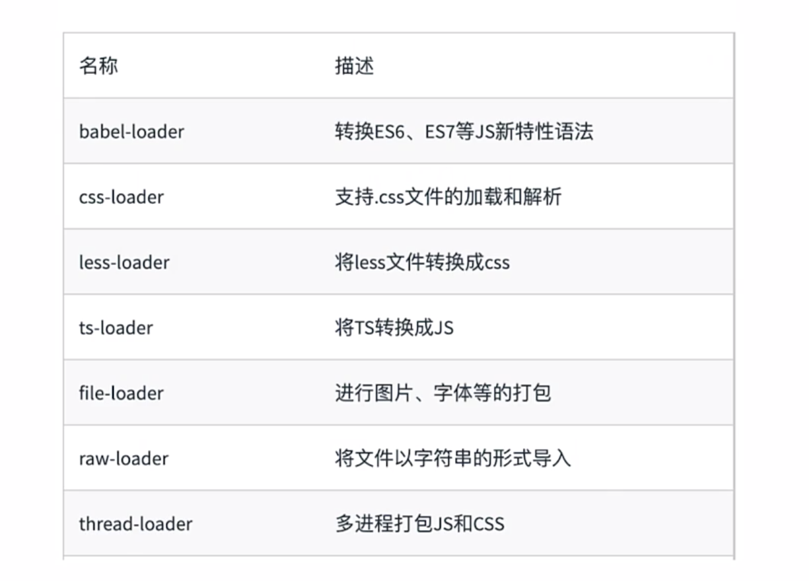
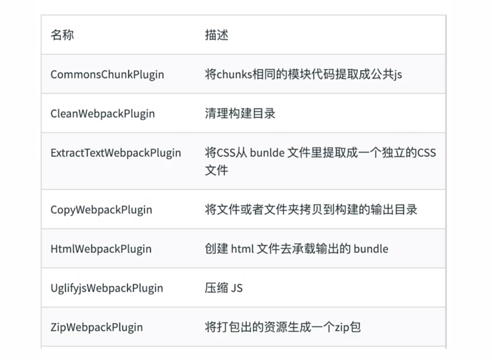
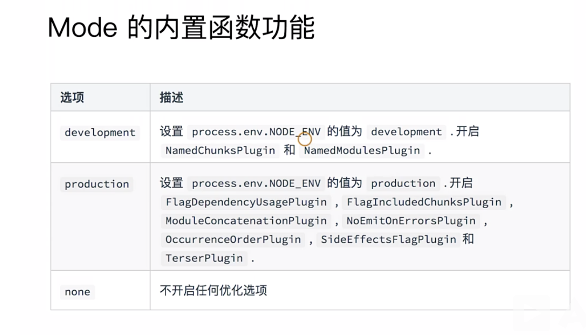
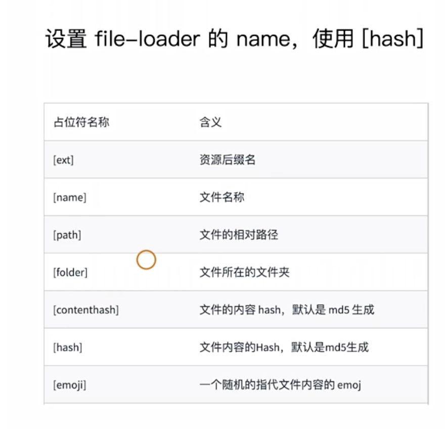

webpack详解
webpack 是一个现代 JavaScript 应用程序的静态模块打包器(module bundler)

如图所示，通过webpack可以对我们的项目源码通过我们的配置做各种各样的处理，最后会得到一系列可以放在服务器运行的文件。
很多时候，我们都是先接触vue再慢慢接触到webpack等概念的，首先我们需要明确的是，vue框架用到了webpack，webpack不仅仅是服务于vue框架的，它是服务于整个前端工程化开发的，包括我们的react等各种框架，都可以用webpack来做项目的模块化打包。
概念
配置文件
- webpack默认的配置文件是webpack.config.js
- 可以通过 webpack –config 指定配置文件 来修改默认配置文件
文件组成
1 | module.exports = { |
webpack有四个核心概念：
- 入口(entry)
- 输出(output)
- loader
- 插件(plugins)
webpack安装
1.安装node和npm
直接下载node安装即可，npm内置在node包中，会同步安装
1
2
3node -v
npm -v
可以查看版本通过npm安装webpack和webpak-cli
1
2
3
4
5
6
7
8
9
10//建议局部安装，所以先创建一个项目
mkdir mywebpack
//进入到项目中
cd mywebpack
//初始化npm
npm init -y
//安装局部的webpack和webpack-cli（4.0以上版本需要单独安装cli）
npm install webpack webpack-cli --save-dev
//查看是否安装成功
./node_modules/.bin/webpack -v官方文档也是提醒进行局部安装
简单例子

通过上面安装和项目创建，我们可以生成类似如上图所示的项目
1.新建webpack.config.js文件
1
2
3
4
5
6
7
8
9
10
11
12
13
14
15
16
17
18
19
20
21const path=require('path') //path是node中的核心库，用来组成文件路径
module.exports = {
//1.打包的入口文件，默认是下面配置
entry:'./src/index.js',
//2.打包的输出，默认是下面配置
output:{
path: path.join(__dirname,'dist'),
filename: 'main.js'
},
//3.环境
mode:'production',
//4.loader模块
module:{
},
//5.插件配置
plugins:[
]
}2.配置package.json脚本
1
2
3
4
5
6
7
8
9
10
11
12
13
14
15
16
17{
"name": "webpacktest",
"version": "1.0.0",
"description": "",
"main": "index.js",
"scripts": {
"test": "echo \"Error: no test specified\" && exit 1",
"build":"webpack" //该脚本会自动寻找./node_modules/.bin/webpack
},
"keywords": [],
"author": "",
"license": "ISC",
"devDependencies": {
"webpack": "^4.44.2",
"webpack-cli": "^3.3.12"
}
}3.新建src目录和入口index.js文件
1
2//简单输出一个文本内容
document.write('hello webpack')4.新建页面文件index.html
1
2
3
4
5
6
7
8
9
10
11<html lang="en">
<head>
<meta charset="UTF-8">
<meta name="viewport" content="width=device-width, initial-scale=1.0">
<title>Document</title>
<script src="../dist/main.js"></script>
</head>
<body>
</body>
</html>可以看到，引用了dist/main.js文件，此时，该文件还没有生成，需要我们通过webpack来执行生成该文件
5.打包
1
npm run build //这里执行的就是npm的package.json中的脚本build
6.浏览器打开index.html，就可以看到输出的内容
组成
入口entry
- 用来指定项目的打包入口
- 单入口：entry是一个字符串
- 多入口：entry是一个对象
1 | module.exports = { |
输出 output
- 用来指定打包输出文件
- output对应的是一个对象，有path和filename两个属性
- path：打包路径
- filename：打包出来的文件名称
1 | const path=require('path') |
loaders
- webpack原生只支持js和json文件类型，通过loaders可以去支持其他类型的文件并且转化为有效的模块添加到依赖图中
- 本身是一个函数，通过接收源文件作为参数，返回转换的结果
- 对一个对象
常用的loaders

用法
1 | const path=require('path') |
- test：指定匹配规则，正则
- use：该规则下，使用哪种加载器
plugins
- 插件是用于bundle文件的优化，资源管理和环境变量的注入
- 插件是可以作用于整个构建过程
- 是个数组对象
常有plugins

用法
1 | const path=require('path') |
mode
- webpack4之后才提出来的概念
- 用来指定当前的构建环境是production，development还是none
- 设置mode可以默认使用webpack内置的函数，默认值是production

loader应用
babel
作用：将es6语法转为es5语法
本地安装
1
2//i是install缩写。 -D是--save-dev缩写
npm i @babel/core @babel/preset-env babel-loader -D项目中新建.babelrc文件，内容为：
1
2
3
4
5{
"presets":[
"@babel/preset-env"
]
}webpack.config.js文件添加loader
1
2
3
4
5
6
7
8module: {
rules: [
{
test: /.js$/,
use: 'babel-loader'
}
]
},
解析css
- css-loader：用于加载.css文件，并且转化为commonjs对象
- style-loader：将样式通过style标签插入到head中
- 本地安装
1 | npm i css-loader style-loader -D |
文件配置
这里注意，对于同个文件需要多个loader来处理时，需要使用数组，并且此时loader是从右到左来执行
1 | module: { |
less
- less
- Less-loader
- 本地安装
1 | npm i less less-loader -D |
- 文件配置
1 | { |
图片/字体
file-loader
- 本地安装
1 | npm i file-loader -D |
- 配置
1 | { |
plugins应用
热更新
配置，该插件是webpack自带的，所以引入即可
1 | const webpack = require('webpack') |
package.json配置：
1 | "scripts": { |
CSS文件压缩
1 |
|
HTML/JS文件压缩
1 | //先npm安装 |
自动清除构建目录
1 | //1.先npm安装插件 |
postCSS
postcss 一种对css编译的工具，类似babel对js的处理，常见的功能如：
1 . 使用下一代css语法
2 . 自动补全浏览器前缀
3 . 自动把px代为转换成rem
4 . css 代码压缩等等
postcss 只是一个工具，本身不会对css一顿操作，它通过插件实现功能，autoprefixer 就是其一。
1 | //postcss.config.js |
font-size适配
- 1.postcss-pxtorem
- 2.结合lib-flexible.js（根据rem动态计算font-size单位）
其他配置
文件指纹hash
- Hash：只有项目中有文件变动了，hash值就会变化
- chunkhash：和webpack打包的chunk有关，不同的entry会生成不同的chunkhash值
- contenthash：根据文件内容来定义hash，只有文件内容有变动，hash就会变化
1 | const path=require('path') |
